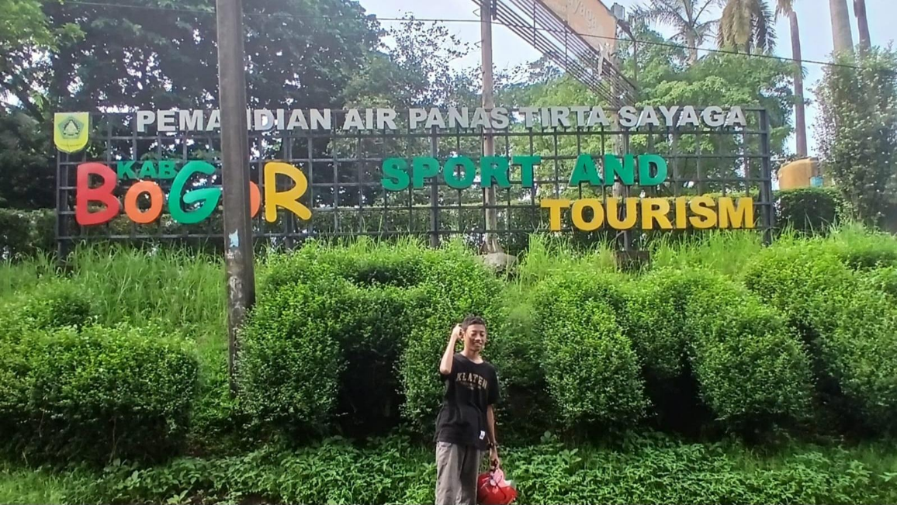
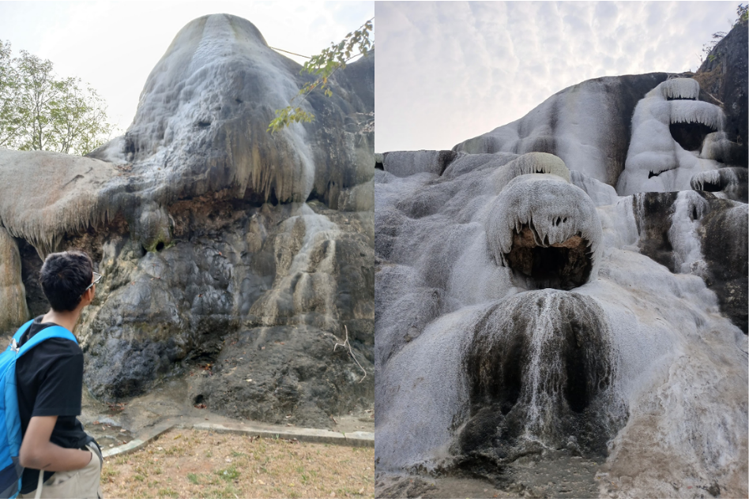
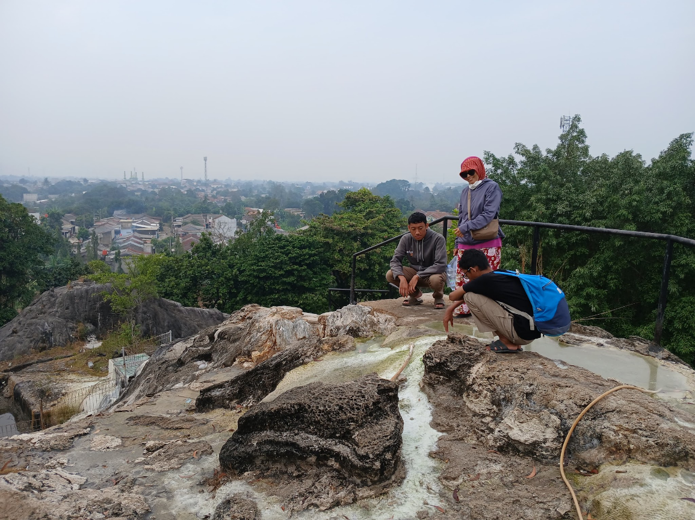

Wisata air panas adalah wisata terapi alami yang bertujuan untuk merelaksasi tubuh. Terdapat 2 jenis air panas alami, ada air panas belerang, dan ada juga air panas non belerang. Air panas belerang atau air panas sulfur adalah air panas yang mengandung suflur dengan kadar tertentu. Sebaliknya, air panas non belerang adalah air panas yang mengandung mineral selain belerang seperti garam, kalsium, dan bikarbonat. Kedua jenis air ini umumnya berasal dari sumber air panas pegunungan atau hasil aktivitas vulkanik. Salah satu wisata air panas yang tidak terlalu jauh dengan Jakarta adalah wisata air panas Tirta Sayaga. Tirta Sayaga merupakan tempat wisata air panas belerang yang terletak di Bojong Indah, Parung, Kabupaten Bogor. Cukup dekat dengan Kota Jakarta yang hanya berjarak sekitar 50 km. Biaya masuk Tirta Sayaga relatif murah, hanya Rp20.000 untuk orang dewasa.

Setelah memasuki loket masuk, terdapat gunung kapur Ciseeng, dari sinilah sumber air panas belerang untuk wisata air ini berasal. Menurut Bogor Viva, gunung kapur Ciseeng merupakan gunung purba yang terbentuk dari sedimentasi laut dangkal yang menandakan kawasan tersebut dahulu adalah dasar laut purba. Itulah kenapa air panas belerang di sini terasa asin, tidak seperti tempat air panas belerang lainnya. Di sekitar kaki gunung terdapat 2 kolam pemandian umum, namun sayangnya kolam tersebut tidak berisi air panas belerang, hanya air biasa yang tidak panas. Di puncak gunung kapur Ciseeng, terdapat sumber air panas yang terus mengalir hingga menciptakan endapan belerang dan kapur di sekitar sumber air.

Selain gunung kapur Ciseeng, Tirta Sayaga juga menyajikan berbagai tempat wisata air lainnya seperti kolam untuk anak-anak, kolam pemandian umum, kolam terapi ikan, serta kamar VIP. Namun jika ingin merasakan air panas belerang, fasilitas tersebut hanya tersedia di kamar VIP dan dipungut biaya lagi sekitar Rp100.000 untuk 1 kamar per 1 jamnya. Terdapat 5 Kamar VIP yang masing-masing berisi gantungan baju, lemari kecil, shower air tawar, dan bak mandi air panas belerang. Bak mandi ini selalu dialiri air panas belerang dari gunung setiap hari tanpa hentinya. Karena selalu dialiri air belerang tanpa henti, terbentuklah endapan keras belerang dan kapur yang melapisi bak mandi.
Pada hari libur maupun weekend, banyak wisatawan yang berkunjung ke Tirta Sayaga karena ingin merasakan air panas belerang yang begitu banyak khasiatnya. Air panas belerang atau air panas sulfur memiliki banyak khasiatnya terutama untuk kulit dan otot seperti; mengatasi rasa gatal pada kulit, muka jerawatan, dan nyeri pada otot. Itulah kenapa banyak yang memanfaat gunung kapur beserta sumber air belerangnya, dan menjadikannya sebagai tempat wisata oleh warga sekitar.